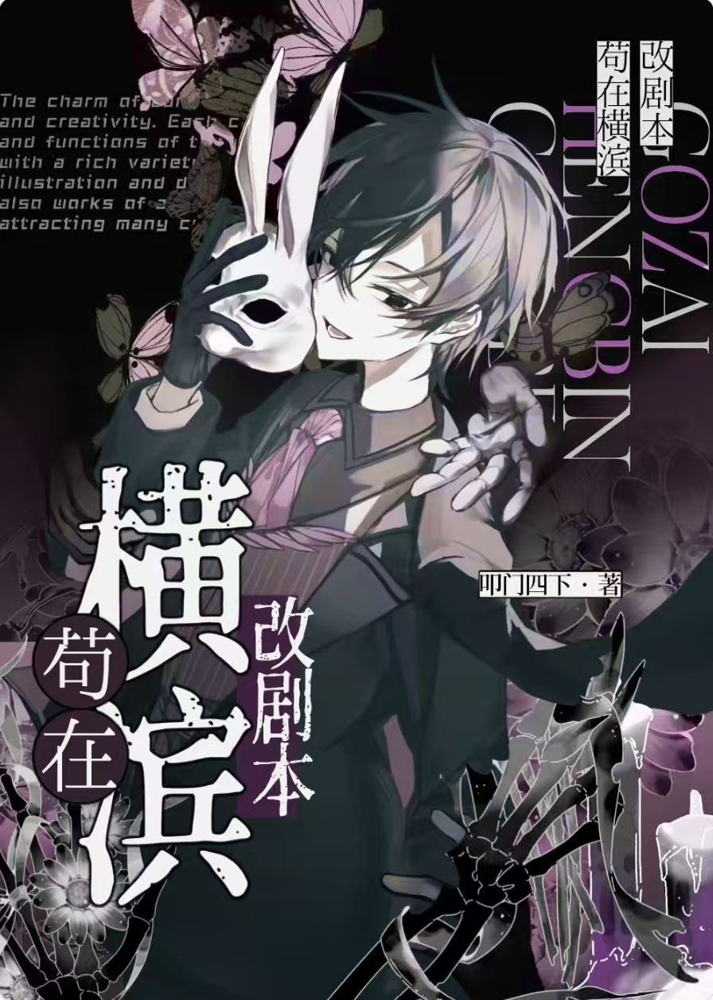
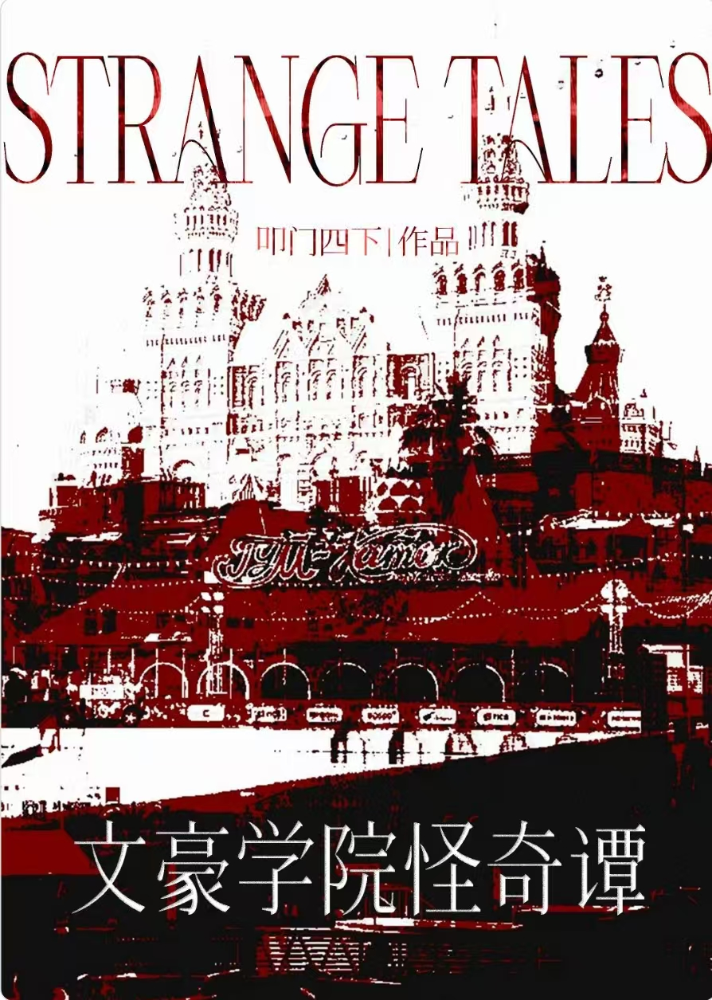
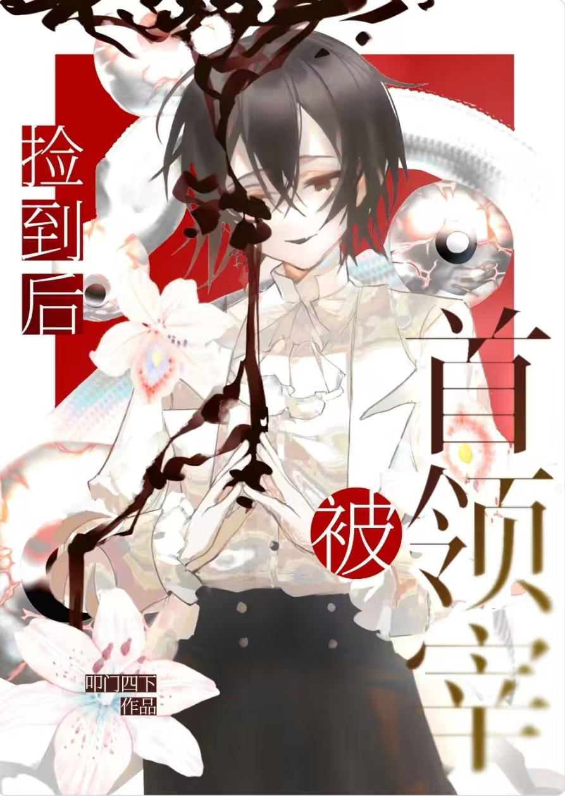
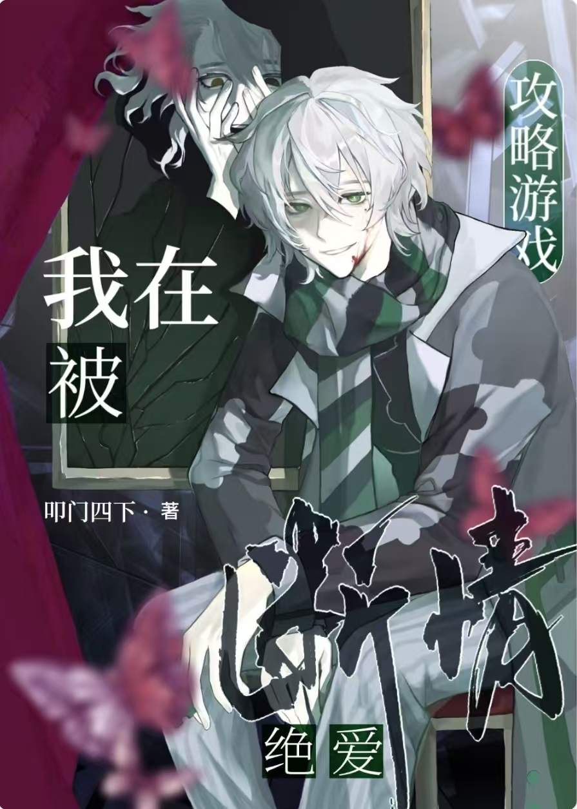
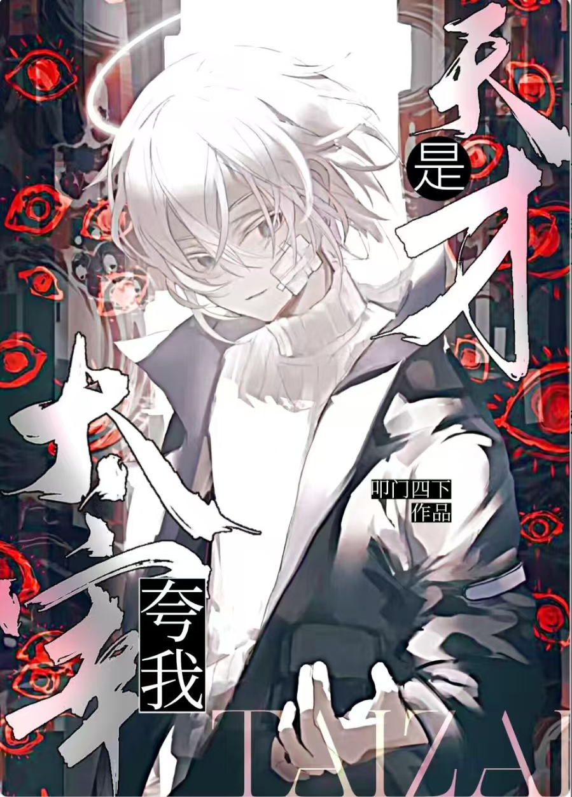
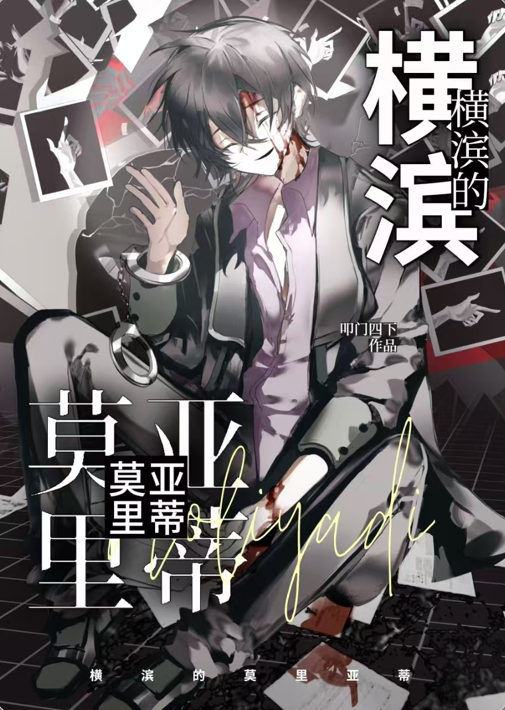

Visual Records






时间顺序排列的~
我要进化！I need power!
www花了一整天，燃尽了，欸嘿嘿嘿~素材也是纯手绘，一想到如此懒惰的我也能做出一个小小小游戏来就有些高兴
唔.点一下那绿色的字就可以进（游戏引导是完全没做 哈哈哈（突然爽朗）






www花了一整天，燃尽了，欸嘿嘿嘿~素材也是纯手绘，一想到如此懒惰的我也能做出一个小小小游戏来就有些高兴
唔.点一下那绿色的字就可以进（游戏引导是完全没做 哈哈哈（突然爽朗）